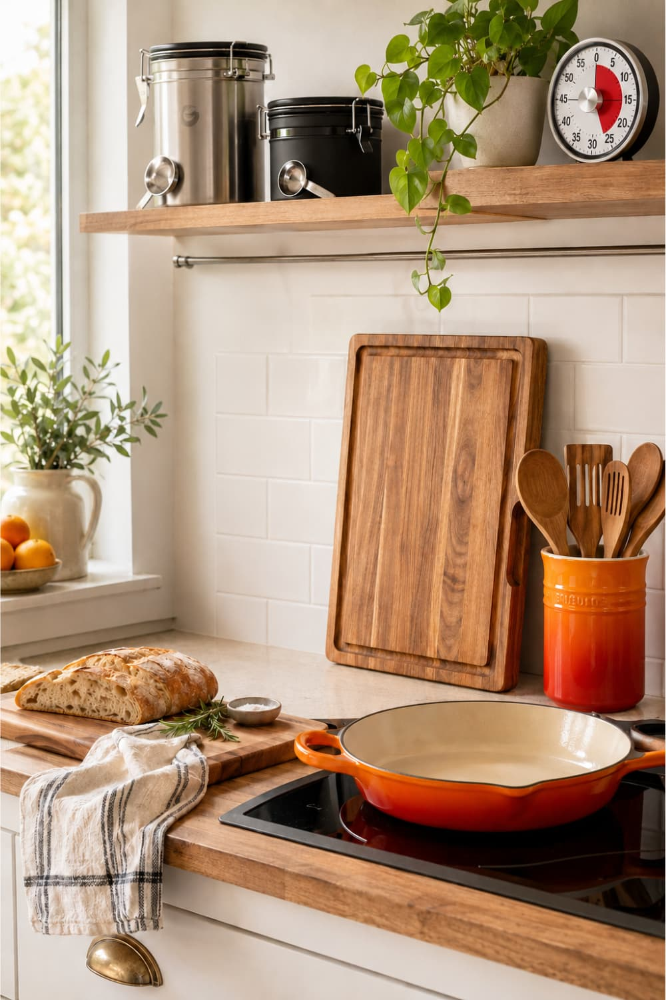
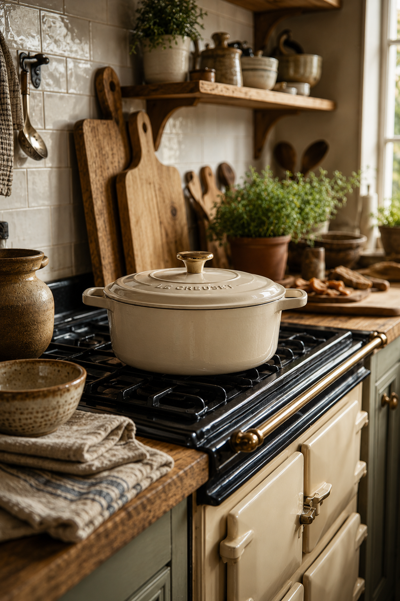
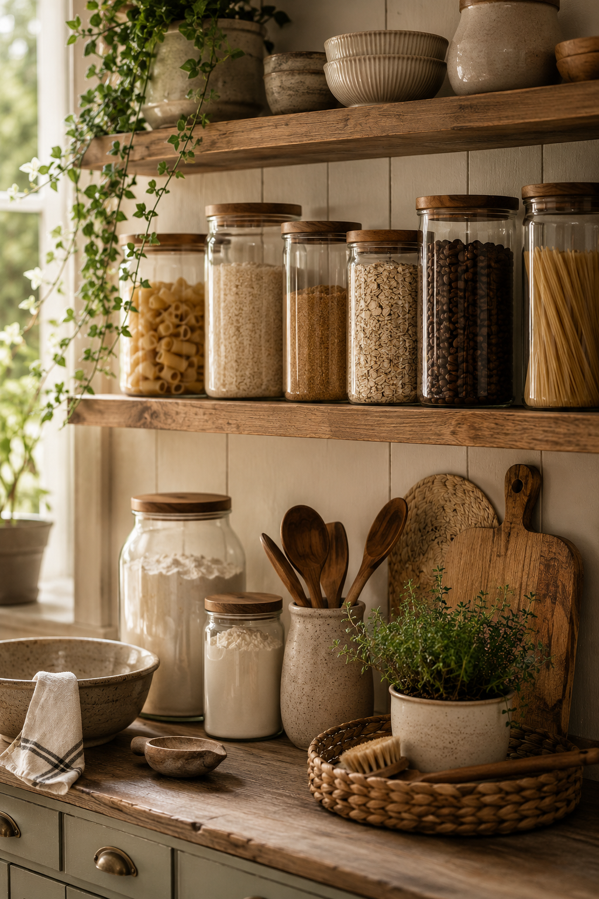
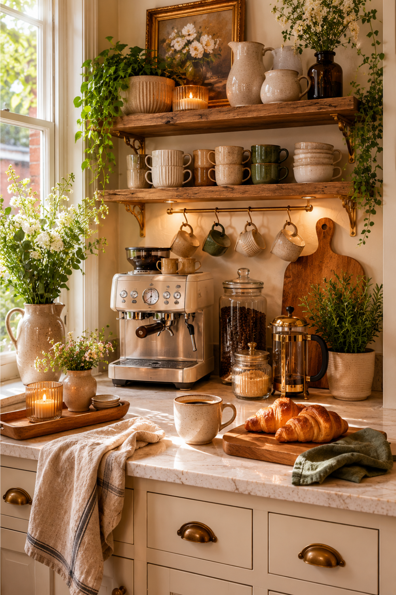
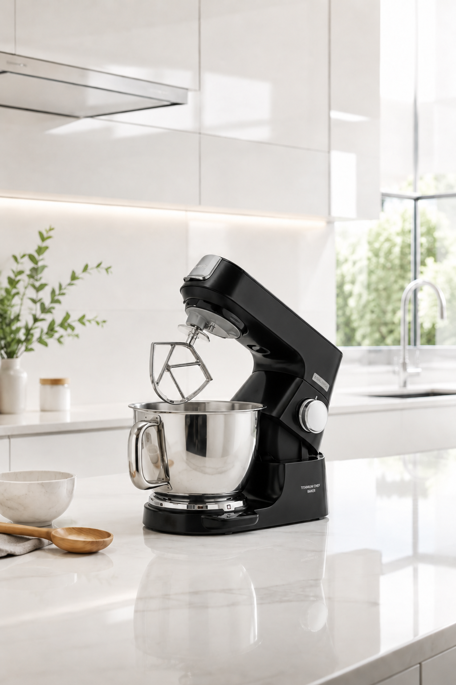
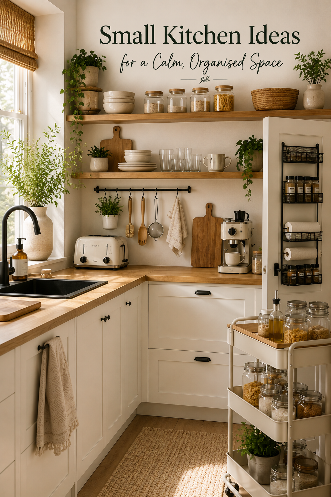
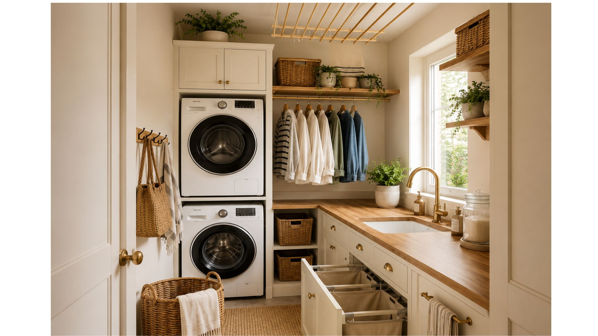

Some links on this page are affiliate links — if you buy something, I may earn a small commission at no extra cost to you.

Warm kitchen details, thoughtful storage and practical pieces beautiful enough to leave out on display.

A soft, sunlit look inspired by the ease of a French summer home — wooden serving pieces, wildflower napkins and simple cream ceramics.

Glass jars, clip-top canisters and woven baskets — simple storage ideas that make a pantry feel calm and considered.

Five kitchen buys worth keeping forever — from a cast iron skillet to a wind-up timer that needs no batteries.

Why copper pans are the choice of professional chefs — and why a good one will outlast everything else in your kitchen.

A good cast iron casserole dish is one of those rare kitchen pieces that seems to get better the longer it stays in a home.

Good storage changes the atmosphere of a kitchen far more than people expect.

Why the Le Creuset Signature Cast Iron Casserole is worth the money, and which size you need.

A coffee corner is about creating a small daily ritual and one of the most welcoming corners in the kitchen.

From the compact Go to the Titanium Chef Baker — a simple guide to choosing the right Kenwood stand mixer.

Clever storage, open shelving and compact kitchen ideas that make a small space easier to use.
A simple guide to choosing the right casserole size, shape and colour for the way you cook.

Laundry, cleaning and storage ideas for making a compact utility room work harder.